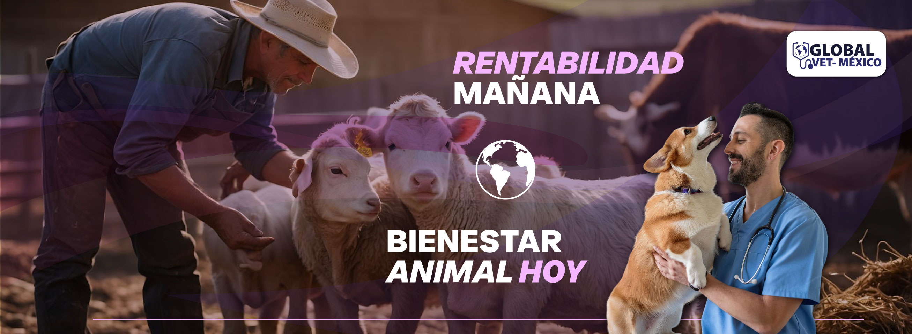
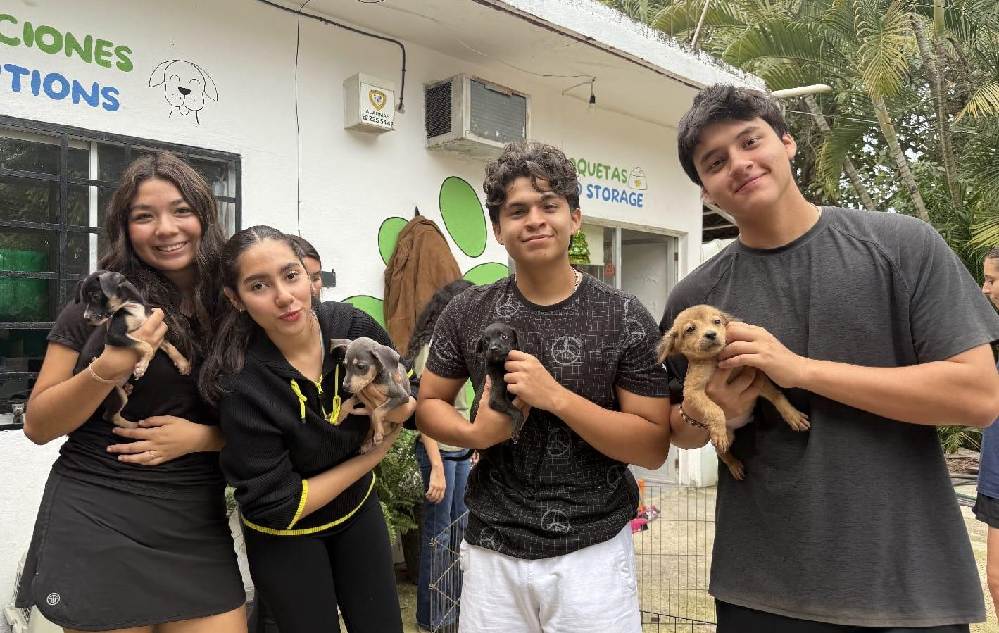
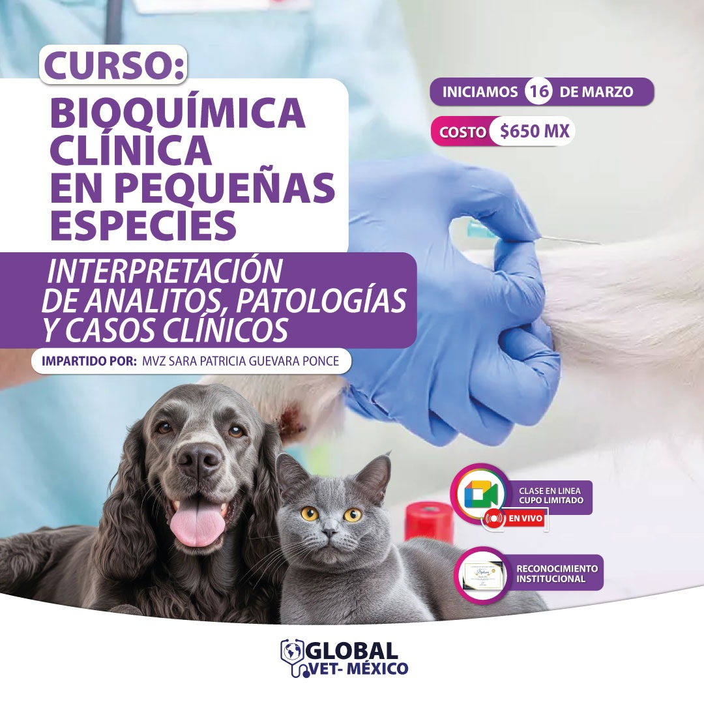
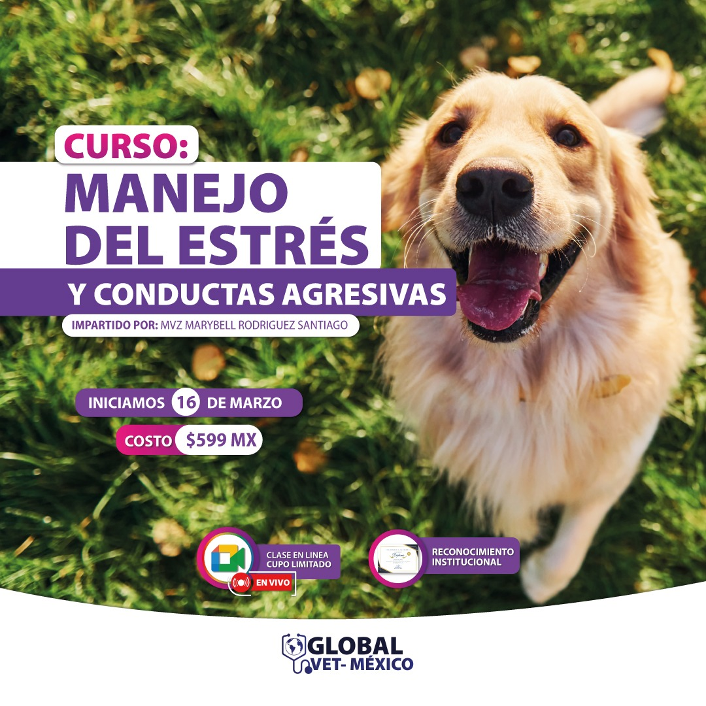
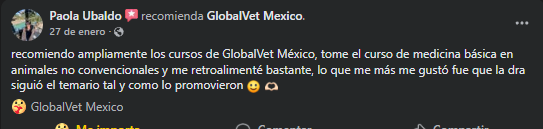
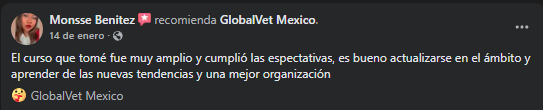
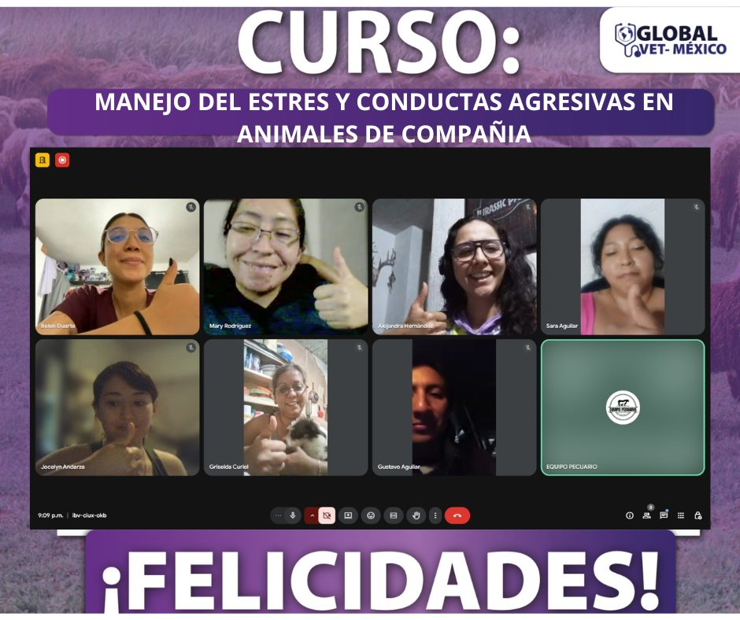

Especialización
Cursos especializados en medicina veterinaria
Programas de capacitación en áreas clínicas y productivas para fortalecer el criterio técnico, la actualización profesional y el análisis aplicado.
Ver detalleEn GlobalVet México reunimos cursos, recursos educativos y una comunidad de aprendizaje pensada para médicos veterinarios, estudiantes y personas interesadas en fortalecer sus habilidades clínicas y técnicas sin perder el enfoque en el bienestar animal.

GlobalVet México es una organización educativa dedicada a la formación, actualización y especialización de profesionales y estudiantes del área veterinaria. A través de programas académicos, cursos especializados y material de estudio, fortalece el conocimiento técnico y práctico en distintas áreas de la medicina veterinaria y producción animal.
La marca promueve una comunidad de aprendizaje donde médicos veterinarios, estudiantes y personas interesadas pueden ampliar sus habilidades, mantenerse actualizados y mejorar la atención y bienestar de los animales mediante educación de calidad.
Explora servicios, capacitaciones y recursos pensados para fortalecer habilidades clínicas, técnicas y académicas en el ámbito veterinario.
Programas de capacitación en áreas clínicas y productivas para fortalecer el criterio técnico, la actualización profesional y el análisis aplicado.
Ver detalle
Formación enfocada en actualización técnica, nuevas habilidades y aplicación práctica para responder mejor a los retos del ejercicio profesional.
Ver detalle
Contenido diseñado para reforzar conocimientos teóricos y prácticos durante la etapa formativa con una experiencia clara y accesible.
Ver detalleAccede a una propuesta educativa clara, práctica y enfocada en el crecimiento profesional dentro del sector veterinario.
Encuentra contenidos estructurados para facilitar la comprensión y aprovechar mejor cada curso, recurso y capacitación.
Descubre cursos y servicios con una presentación más ordenada, fácil de explorar y enfocada en lo que necesitas consultar.
Solicita información, revisa la oferta académica e inscríbete con mayor claridad gracias a accesos directos y llamados a la acción mejor ubicados.
Revisa opciones académicas orientadas a la actualización profesional, el aprendizaje práctico y el bienestar animal.

Curso orientado al análisis e interpretación de pruebas bioquímicas en medicina veterinaria.

Contenido enfocado en criterios, protocolos y fundamentos quirúrgicos aplicados.

Bases terapéuticas para apoyar la recuperación funcional y el bienestar del paciente veterinario.

Herramientas para fortalecer la toma de decisiones en escenarios cotidianos de práctica profesional.

Estrategias orientadas al manejo responsable y a mejorar la experiencia animal en diferentes contextos.

Actualización en principios clínicos y atención integral del paciente con una presentación más sólida de la oferta académica.
Esta estructura mejora el recorrido del usuario y hace que la página se sienta más profesional y fácil de seguir.
El visitante entiende rápido quiénes somos y qué tipo de formación encontrará.
Los cursos y servicios tienen mejor jerarquía para facilitar la decisión.
WhatsApp y formularios aparecen en momentos estratégicos para convertir.
Impulsamos el desarrollo profesional, el bienestar animal y la excelencia en la práctica veterinaria mediante cursos, programas educativos y recursos de aprendizaje.
Buscamos consolidarnos como una plataforma educativa líder en capacitación veterinaria, reconocida por calidad, innovación e impacto positivo.
Explora imágenes de cursos, materiales y actividades que muestran el entorno académico y profesional de GlobalVet México.
La prueba social sigue siendo una de las fortalezas más importantes de la página y ahora se integra con mejor jerarquía visual.
Los testimonios conviven mejor con el resto del diseño para verse más sólidos, ordenados y profesionales.
Una identidad visual más consistente que refuerza el carácter educativo y profesional de la plataforma.



La galería se conserva, pero ahora convive con una arquitectura más limpia para verse como evidencia institucional y no solo como colección de imágenes.



La estructura guía mejor cada recorrido y facilita el acceso a cursos, servicios y canales de contacto.